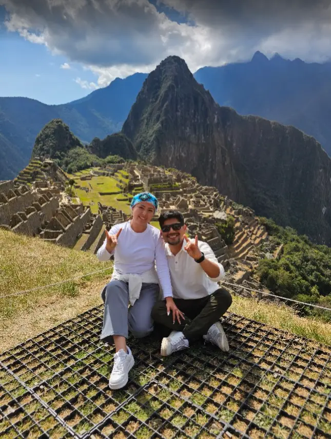
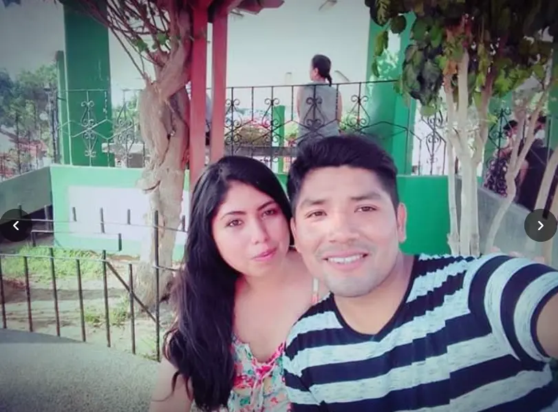
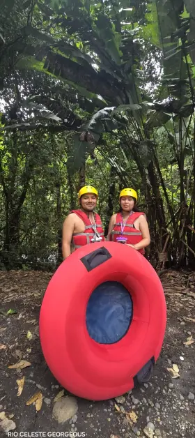
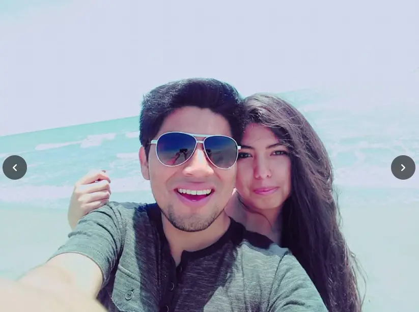
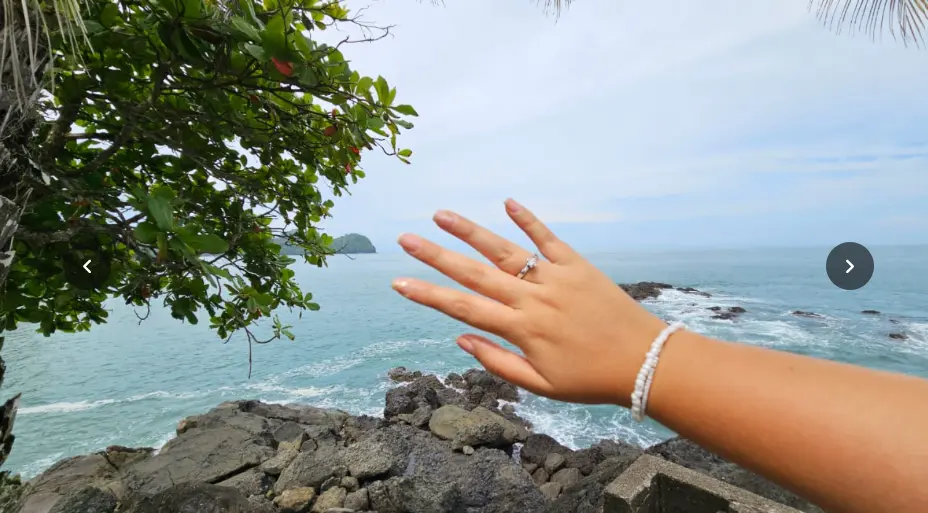
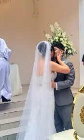

01
01 — COINCIDIMOSEntre millones
Desliza para seguir ↓Entre millones
de personas,
nos encontramos.
No fue amor a primera vista. Fue algo mejor: nos conocimos, nos elegimos y convertimos la complicidad en nuestro lugar favorito.
02 — ARCHIVO DE NOSOTROSUna vida cabe
Una vida cabe
en pequeños instantes.
Toca la foto para descubrir otro recuerdo.
Todo comenzó con momentos como este.
03 — NOSOTROS POR EL MUNDODonde sea,
Donde sea,
pero contigo.

02Río Celeste

03Más aventuras
Desliza las fotos →

04 — LA PROMESAY entonces,
Y entonces,
ya no había duda;
dijimos: para siempre.
Elegirte como mi esposa fue convertir en promesa todo lo que mi corazón ya sabía.
05 — 26.07.2026El día que
El día que
comenzó todo.

04
SEP
SEP
Feliz cumpleaños,
mi amor.
Hoy celebro un año más de vida de la mujer que elegí a mi lado. Faltarían las palabras para poder describir el sentimiento que me causa saber que, entre millones de personas, pudimos coincidir en esta vida; que, entre millones de personas, tengo la dicha de poder disfrutar de una mujer hermosa, trabajadora y con una luz que ilumina mi día a día.
Hoy celebro un año más de vida de una mujer valiente, que dejó su tierra, su familia y amigos, y se aventuró a trabajar en un lugar donde nadie la conocía. ¿Y sabes qué? Le fue muy bien. Quedaron atrás las lágrimas por ir a un lugar que no conocía y se cambiaron por eternos abrazos de reencuentro. ¿Recuerdas cuando me dijiste que tenías miedo de viajar? Pues, increíblemente, yo lo recuerdo, y no se me olvida la añoranza en tus ojos cuando te dije: «¡Tú puedes! Nosotros podemos».
Hoy no solo celebro yo; celebran todos aquellos que te conocen, celebran toda nuestra familia y todos nuestros amigos, porque esa mezcla de picardía y templanza que existe en ti se encuentra una sola vez en la vida.
Feliz cumpleaños, amor. Sé que vendrán muchos años más. ¿Y sabes qué es lo mejor? Que tenemos todos esos años para disfrutarlos.
Te amo, ya lo sabes,
de aquí a la Luna y volver.
Luis ♥